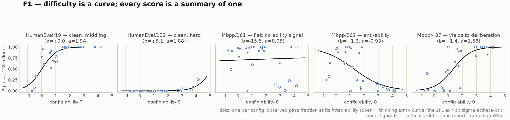
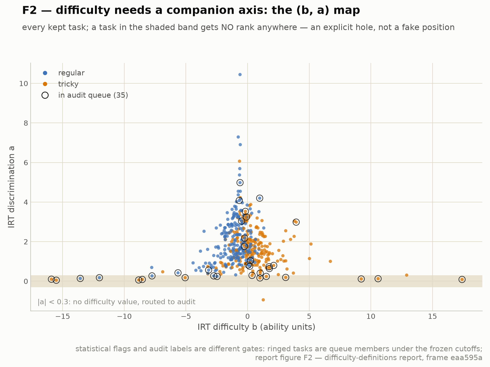
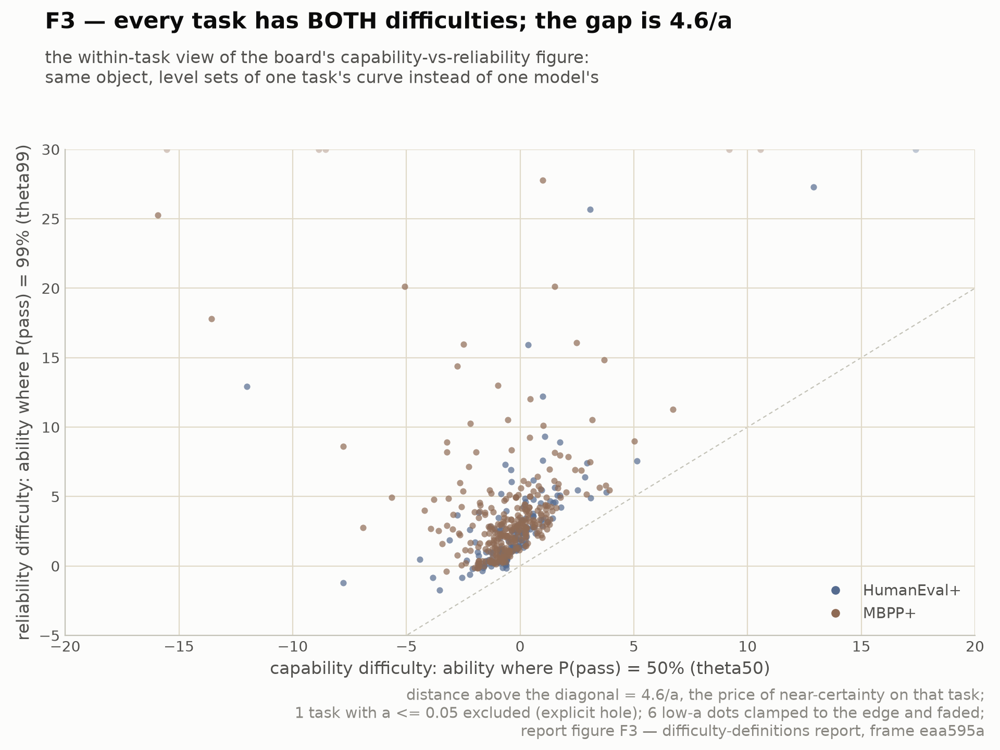
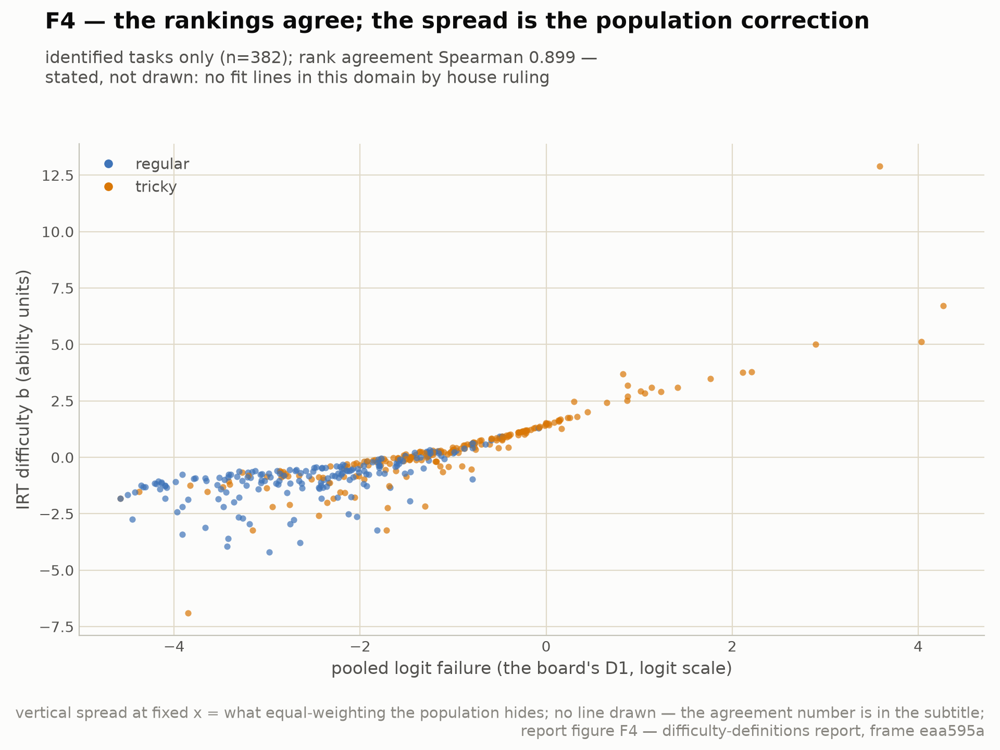

What this report answers. Which definitions of task difficulty are candidates, what each one says on our data, and which ones survive. The data are 28 model configurations on 443 kept tasks with 128 rollouts each; the kept set follows the label decisions and the numbers regenerate whenever a decision moves a task in or out. Provenance and file paths are in the note at the end.[^prov]
[^prov]: requested by the project maintainers; near-final; the audit team
discussion resolved (their input marked); temp plots requested from
the maintainers (slots marked). Keep-set under the queue-closing label decision
(eaa595a), built live from the label files. Per-task scores for every
definition: analysis/irt/task_scores.csv; the statistical re-audit
queue: analysis/irt/difficulty-flags.csv.
Terms used in this report (plain language). IRT, item response theory: the psychometrics behind standardized testing; each solver gets an ability number and each task gets difficulty numbers, all estimated jointly from who-solved-what. 2PL: two-parameter logistic, the standard IRT model. Each task gets two numbers: b (location/difficulty: how capable a model must be for a 50% success chance) and a (discrimination: how sharply success flips from fail to pass as capability rises); P(success) = logistic(a × (capability − b)). Low or negative a marks broken or lure tasks. θ (theta) is a solver's capability on the same scale. the difficulty scale is the fail rate stretched at both ends (in symbols,
log(p/(1−p))); stretches probabilities so extremes stop compressing: 0.5→0, 0.99→+4.6, 0.01→−4.6. Jeffreys smoothing: estimate a rate as (successes+½)/(attempts+1), so 0-of-n and n-of-n stop being infinitely certain. Spearman ρ: rank correlation; 1 means two scores order tasks identically. infit/outfit, standard IRT misfit statistics: how far a task's actual outcomes deviate from its fitted curve. DIF, differential item functioning: two solver populations ordering the same tasks differently (here: thinking vs non-thinking models). k50 / nats: the attempts a fixed solver needs for a ≥50% chance of one success; nats = −log(per-attempt success probability), the same quantity on a log scale. Censored / saturated: all-fail or all-pass cells, where a value can only be bounded, not estimated.
A difficulty definition, for us, is a rule that turns a task's rollout record into a value or ordering, with a declared setting: which solver population, which attempt budget, which verifier. Six candidates, chosen to be genuinely different objects rather than re-scalings of one another. (The IRT framing below overlaps with the "quick primer" the project maintainers circulated: Rasch/2PL, discrimination-as-trickiness, infit/outfit, level-sets, DIF; where this report goes beyond it is marked.)
Definition. D1 = the pooled failure rate over a declared model pool and budget, placed on the difficulty scale. This is the classical-test-theory item p-value; it is what the current difficulty sort uses. Keep because it is the anchor everything else re-parameterizes; cheap; monotone. Fix by declaring the setting (pool, budget, verifier version) next to every use, Jeffreys-smoothing ((c+½)/(n+1)) so 0/n and n/n stop being exact ties, and flagging censored tasks instead of ranking them. Known failure: pool-mix dependence (adding weak models makes every task "harder"); that is not a bug of the estimator but of the definition, which is why D2 exists.
Definition. Fit P(pass) = σ(a_i(θ_m − b_i)) jointly over models × tasks; difficulty = b_i, the ability at which pass odds are even, reported together with discrimination a_i. Population-corrected: adding weak models moves θ̂s, not b̂s (up to scale anchoring). The discipline that makes it measurement rather than curve-fitting (this is the Rasch tradition's actual content): compute item fit (infit/outfit residual mean-squares) and |a|; tasks that fail these checks do not get a difficulty value at all: they are declared off-scale and routed to audit. Low or negative a is not "medium difficulty", it is "success unrelated (or anti-related) to ability": a lure, a defect, or a different construct. Robust scalar variant for items where b is ill-identified (a≈0): report expected failure at a declared reference ability, 1 − σ(â(θ* − b̂)), defined for every item, including anti-ability ones.
Definition. For each task, the ability at which the failure rate crosses a criterion: crossing 50% = capability difficulty; crossing 99% = reliability difficulty. Same fitted curve,
two level sets: the primer's observation, which we operationalize.
New observation (ours): in a 2PL both level sets are closed-form,
θ_τ = b + logit(τ)/a, so the per-task capability→reliability gap is
4.6/a: discrimination is exactly the inverse of the per-task reliability
gap. "Low-discrimination task" and "task that resists becoming reliable"
are the same thing, said twice. This puts the project capability-vs-
reliability curve work and the difficulty work on one object.
Manifest variant (no latent θ): the smallest model scale / log-compute at
which a task's pass rate crosses τ: difficulty in physical units, at the
cost of family confounds.
Definition. Fix ONE solver; difficulty = −log p̂ where p̂ is its per-attempt success probability (Jeffreys-smoothed), equivalently k50 = log½ / log(1−p̂), the sampling budget at which at least one success becomes more likely than not. Why it is a different object from D1–D3: those ask which solvers succeed; this asks how rare success is for a fixed solver. It separates rarely-solved from never-solved (censoring explicit at c=0), it is additive over independent conjunctive subtasks (nats), and it is the difficulty that prices inference-time compute: a task at 2 nats costs ~7 attempts for coverage; at 5 nats, ~148. Frame requirement: meaningless without naming the reference solver and temperature; we compute it at three references (mid Qwen, Haiku, Haiku-think).
Definition. Score each attempt fail < base-only < plus and fit a graded / partial-credit model: two thresholds per task, b_base (produce something credible) and b_plus (survive the hidden edge cases). Difficulty is the pair; the spacing b_plus − b_base is the hidden-edge-case load: the verifier-strictness share of difficulty, on the same latent scale. Why bother: a single pass/fail collapses "hard to attempt" and "hard to get exactly right", which our audit shows are different phenomena (tricky tasks live in the second). Data exists (base/plus statuses are stored per rollout); this is the one definition still needing a loader pass.
Definition. Over paired thinking/non-thinking arms of the same weights, the per-task contrast Δ_i = mean over pairs of the difficulty-scale distance between the thinking and the non-thinking pass rate. Formally differential item functioning between two populations; and per the primer, DIF presence is a finding, not a nuisance: it measures which tasks yield to deliberation, are indifferent to it, or are actively hurt by it. Negative-Δ tasks are the over-inference lures. This makes "difficulty for whom" actionable: difficulty is a short vector (Δ-think, scale-slope, …), and specific contrasts carry meaning.
At this writing (September 2026) exclusion is semantic (audit labels contradiction/underspecification).
We add a statistical gate from D2's machinery, |a| < 0.3 or item misfit
(outfit above the 95th percentile), with a ceiling/floor guard since a is
unidentifiable on saturated items, as a flag and re-audit queue, never an
automatic delete. The gates are complementary by construction: the audit
sees why (with adopted justifications) but cannot see behavioral anomalies;
the statistics see that something is off, including verifier/grader
errors invisible to reading the task (cf. arXiv:2605.30504's IRT
benchmark-auditing, 95% precision on mislabels with 114 models), but cannot
name the cause.
Policy (agreed with the audit team): labels exclude (they carry a adopted WHY); statistical flags feed a blind deep-check re-audit round under their standing protocol; the flags live in a separate file with separate custody, regenerated with every refit, while the label files remain the project maintainers-adopted ground truth (files in the provenance note). A robustness note from practice: queue membership near the misfit threshold is jittery when the cutoff is a live quantile (a 3-task keep-set change swapped one borderline member, Mbpp/614 ↔ 425); the cutoff is therefore frozen at the current epoch's value with a drift monitor, so membership moves only when a task's own statistic moves, and threshold-straddling audits complete anyway as specificity evidence (the audit team's protocol). Auto-exclusion on statistics is rejected because it conflates defects with genuine inversions (Mbpp/261 is real behavior, not a broken task) and 28 configs is thin for stable a. Precedent that this formalizes existing ad-hoc practice (the audit team's cases): their three known grading incidents were all high-ability-fail/low-ability-pass patterns (e.g. a reasoning model scoring 0/128 on the trivial HumanEval/15 due to a proven grader artifact), exactly what the gate flags with no bespoke instrument; and two round-7 split verdicts (Mbpp/311, 792) would have had a decisive statistical tiebreaker.
Single-number difficulty without a companion axis (b alone, pooled rate alone): every mechanism above shows one number conflates location with discrimination/reliability/lure-ness. Human-anchored scales (time, Codeforces-style ratings): right idea, no human data in this pipeline yet. Ex-ante text-based prediction: the QDE literature's honest ceiling is low; it is an explanation layer, not a definition.
Frame of this part: a dated snapshot, 28 configurations and 443 kept tasks on the late-August set of results. The live fit is the larger current chain, 59 model rows on wave 1 (431 tasks), rerun at every board landing; its outputs and the decisions record are named in the provenance note.
Every number in this part comes from one per-task score table and one fit over the 28 configurations and 443 kept tasks (both re-judges included); the stability table below was computed when the kept set had 446 tasks, and the difference is immaterial to it. Files and the decision that fixed the kept set are in the provenance note.[^prov]
/
(true division, 5/2 = 2.5) and // (floor division, 5/2 = 2). Weak
models take the prompt literally, write /, and pass: the tiny
Qwen2.5-Coder-0.5B passes 81 of its 128 attempts. Strong reasoning models
notice the whole-number outputs in the example, infer that floor division
must have been intended, write //, and fail the held-out tests where
the division isn't exact: Claude Haiku passes 0 of 128. More capability
means more failure here; the pooled rate cannot represent that, the
discrimination parameter states it in one number.disposition column citing round
verdicts on explained members, per the flags-persist convention). The
gate's false-fire modes are now a characterized, named set (family-DIF
at ceiling; subset-population effects), not an unknown.
Round-10 additions to the record: HumanEval/61, the hold-discipline's
first formal lead, closed honestly as a statistical artifact (per-sample
replay clean, 0/222); and Mbpp/95 became the headline mechanism: strong
models style-normalize the task's non-PEP8 entry-point name
(Find_Min_Length) and thereby self-inflict ~85% of all project failures
on a trivial task: a style-normalization lure, the same species the maintainers
found dominating negative discrimination on their benches, now confirmed
inside our own pool. Four round-10 label dissents sit in the decision
queue; and the too-easy side of the difficulty-outlier rule reads, per
round-10 calibration, as "trap on a trivial task" more often than "dead
oracle".
HumanEval/97 deserves its line: capability-inversion CONFIRMED,
tricky: the gate independently recovered the project's oldest inversion
suspect, with a trace-level mechanism (mid-strength thinking models
verify only against the shown examples, whose negative cases
coincidentally validate the residue bug; the original benchmark's own
canonical solution had the same bug).Cross-benchmark replication. The estimator was
ported literal to four unrelated benchmark matrices (23–27 configs ×
534–1209 tasks each; converged; Spearman(b, −pooled) 0.90–0.99; same
first-order-summary deviance caveat), and this report's mechanistic
predictions were scored against their per-task failure-anatomy tally:
High-a = clean skill gates. CONFIRMED (steepest: hard-constraint
generation, mean a 2.7, one task at +6.3). Low-a = ability-orthogonal
mechanics. PARTIAL: ambiguity-forks yes, but transcription-floor
falsified (a ≈ 1.4: per-character fidelity scales with size and
thinking, so it discriminates), and the largest low-a family was one we
did not predict: improvement-shaped failures (second-guessing /
overturning a correct draft; lowest a on every bench it appears, 0.79–
0.91): mechanistically the same rumination that drives our
thinking-hurts cluster. Negative-a = sophistication-induced lures.
CONFIRMED in spirit, mechanism taxonomy amended: our negatives are
inference lures (Mbpp/261, HE/97: over-inferring intent), theirs are
style lures (e.g. "answer with only mathematical notation": terse
weak models pass ~100%, strong arms fail by explaining). And their
checkpoint-idiosyncratic misconceptions landed exactly in the |a|<0.3
band; in their words, the flag queue and their inverse-scaling pockets
"are the same object." Params: ~/newbench/tails/work/irt_*_task_params.csv;
analysis in their FINDINGS.md §18.
Day-one live catch: the HumanEval/15 flag (high-θ
configs failing a trivial one-liner, ability-correlation −0.54) turned
out to be a real, previously unknown grading incident: two never-
screened back-catalog arms (DeepSeek-V3-0324, DeepSeek-Coder-V2-Instruct)
sit at literal 0/128 on plus with the proven grader memory-inheritance
signature (base passes; every plus failure first-fails at the big
[1000001] input; failing samples replay correct and fast on an idle box).
The saga concluded with the mechanism proven end-to-end: a MemoryError
from a 4.46GB evaluator parent against a 4GB child rlimit (the
memory-knob suspension), demonstrated by an exception-visible probe. The
task itself is a fine regular task: the semantic gate structurally could
not have seen this; the statistical gate found it in the back catalog on
delivery day, and round 8 added a second, previously unknown judge-defect
class the same way (Mbpp/566, recursion-inheritance).
Note the pleasant asymmetry: grader-artifact flags are self-cleaning:
once the cells are re-graded, the anomaly vanishes from the data and the
flag retires itself on the next refit. Observed: the
DeepSeek re-grade landed (both arms 0/128 → 128/128) and HumanEval/15
left the queue on the very next refit with no human action: the full
loop (statistical flag → blind audit → proven grader defect → re-grade →
flag self-retires) has now run end to end once.
The complementarity now has live cases in BOTH directions: the
statistical gate caught HE/15 where semantics is structurally blind (a
fine task, broken grading), and the same day's semantic decision c2d3733
removed Mbpp/145 and Mbpp/473 (tricky→underspecification) which the
statistical gate had NOT flagged: each gate catching what the other
cannot see is the two-gate thesis working, not a miss for either. And the
day's queue-closing decision (eaa595a) removed HumanEval/62 (a task that
was sitting in the statistical queue at the time) by independent
convergence, verified against the audit record: the semantic dissent
predates the two-gate work by two days (the R1 trace re-audit round), the
decision path ran entirely through the semantic channel, and the
statistical flag never entered the conversation. Two instruments with
different mechanisms (low discrimination from the thinking-arm rumination
pattern; a representation-convention pin found by trace reading) hit the
same defect with zero causal contact, arguably stronger evidence than a
single connected loop.
4. Sensitivity (the two-policy check): of the 50 hardest tasks by pooled
rate, 11 are statistical anomalies: over a fifth of the apparent hard
tail is not "hard", it is off-scale (lures, DIF, suspected grader
artifacts). This is the concrete cost of ranking by D1 alone.
5. Discrimination is the reliability gap (D3): per-task 4.6/a has a median of 2.8 steps of ability and a fat tail (p90 = 6.9). For scale: our entire
28-model ladder (from Qwen3-0.6B at the bottom to Claude-Haiku-thinking
at the top) spans about 4.6 steps of ability end to end.
What this means in practice:
- "Solves it" and "can be trusted with it" are separate milestones with
separate arrival dates. For the median task, the extra capability
needed to go from a coin-flip (50% per attempt) to dependable (99% per
attempt) is about 2.8 steps of ability, roughly the distance from Qwen2.5-Coder-7B to
Claude-Haiku-thinking. When a mid-ladder model first "solves" a typical
task, you need near-frontier capability before a single attempt can
be trusted.
- A tenth of tasks can never be certified single-shot-reliable by
waiting for better models: their gap (7 or more steps) exceeds the entire
observed model range. For those, reliability must come from the
protocol, not the model: retries plus a verifier (k independent
attempts with checking turn a 90%-per-attempt task into system-level
near-certainty), or redesigning the task. Practically: promising 99%
on such tasks costs k× compute or re-engineering; the next model generation will not deliver it.
- Discrimination a is the "reliability ROI" of extra capability. On a
steep task (high a), one more step of model ability converts 50% →
90%+; on a flat task (low a), the same investment buys a few points.
So "will the next model generation fix this failure?" is answered per task by
a: high-a failures, yes; low-a failures, no (those need audit or
protocol fixes instead).
- For the published ranking: two models with equal overall pass rate can differ
widely in how much of their solved set is in the trustworthy zone. A
reliability leaderboard should count tasks at the 99% level-set (or
show both crossings); the per-task gap column identifies which tasks
can ever enter that count. Task-level reliability is not a rescaled
copy of task-level capability; it is a second axis with its own
ordering.
6. Thinking-DIF (D6) is large and two-sided: biggest yields +5.1 to +6.6 steps (Mbpp/437, /581, /791, /722, /455: thinking converts near-never
into near-always); most think-HURT (−2.6…−4.1: Mbpp/261, /162, /433,
HumanEval/55, /161) are exactly the low-a cluster: deliberation
amplifies the lure. Tricky tag, low discrimination, and negative
thinking-response are three views of one phenomenon, now separable from
honest depth using data we already have.
7. Censoring largely dissolves under the wide pool: 1 task all-pass, 0
all-fail across 28 configs (vs ~20% unrankable under the 3-Qwen pool);
D4 at the Haiku-think reference still censors on its never-solved tail,
which k50's explicit censoring flag is for.
Constraints an adopted definition must meet: recomputable in seconds inside a sweep OR shipped as a versioned single-producer artifact outside the render chain; total over kept tasks with explicit no-value flags (no silent NaNs); the ordering must keep per-model failure trends locally monotone on the difficulty scale (the reference smoother's assumption); and stability under growth of the model set: task-order Spearman ≥ 0.97 under any single-family removal. Also carried: D4's reference-model anchoring is circular for any figure plotting those same models against the axis (audit/pricing use only), and swapping the published ranking's definition is a P-level published-record change.
Stability test result (run on this matrix, 4 single-family ablation refits): ρ(b) = 0.98 (drop Claude), 0.97 (drop DeepSeek), 0.95 (drop Qwen2.5-Coder), 0.86 (drop Qwen3, 12 of 28 configs): b FAILS the bar on the heaviest ablation; pooled D1 scores 0.998/0.981/0.978/0.936 on the same ablations. The bar travels with the ablation design: their ≥0.97 was measured on 7-family ablations of a 63-configuration model set where the heaviest removal is 12/63; here the heaviest is 12/28: a much bigger bite, and the incumbent D1 itself fails it there. On THIS panel the honest comparison is b 0.86–0.98 vs D1 0.94–1.00, same ablations: D1 dominates on every one, which is the two-layer argument in one sentence. We also tested whether b's instability is signal (genuine thinking-DIF reordering): it mostly is not; |Δrank b| correlates ≈ 0 with |think-DIF| globally (top movers are enriched in the ill-identified low-a cluster; their mean |think-DIF| is 2.0 vs 1.4 baseline, a mild tail effect only). Honest conclusion: with 28 shared-weight configs, b is a lens and a diagnostic, not yet a publication-grade ranking column: precisely the primer's caveat, now with numbers. The flag/queue layer does not have this problem (it routes to human audit rather than into published ranks).

F1. Five kept tasks, each drawn as what it is under the 2PL reading: a curve of pass probability against config ability; dots are observed 128-rollout pass fractions (open = thinking arms). A middling clean task (HumanEval/19), a hard clean task (HumanEval/132, b=+5.1), a flat task no ability level separates (Mbpp/161; its printed b=−15.5 is deliberately absurd: with a=0.05 the location is meaningless, which is exactly why it gets a hole), an anti-ability task (Mbpp/261, a=−0.93, descending), and a task that yields to deliberation (Mbpp/437, open think dots above filled). Any single-number difficulty is a summary of one of these curves.

F2. The two-axis map: where the curve sits (b) against how sharply it separates configs (a). Tasks in the shaded |a|<0.3 band get no rank anywhere: explicit holes routed to audit; note the band's strays flung to absurd b (±16): location means nothing without discrimination. Rings are the 35-member statistical queue; colors are the audit labels; the two gates disagree often enough that neither replaces the other.

F3. Every task's capability difficulty (θ50) against its reliability difficulty (θ99), the within-task twin of the published capability-vs-reliability figure. Vertical excess over the diagonal is 4.6/a: low-discrimination tasks demand far more ability for near-certainty than for a first solve. One a≤0.05 task excluded as an explicit hole; six low-a dots clamped to the top edge and faded.

F4. The sanity check: IRT b against the published pooled failure on the difficulty scale; no fitted line, per the reference decision. Note on the two Spearman values in this report: 0.86 is computed over all identified tasks; F4's 0.90 is over the 382 unflagged tasks (443 minus the 61 explicit holes): agreement improves exactly when the off-scale tasks leave the comparison, which is itself evidence for the purify discipline. The tight hard arm and the fanning easy side ARE the population correction: agreement where it matters, spread where equal-weighting hides variation.
Two-layer adoption, honest to the stability test:
Ranking layer (the published axis): keep D1 (Jeffreys- smoothed, setting-declared, censoring-flagged) as the ranking column for now. It is the most removal-stable object we measured, computable in a sweep, and its known conflations are now documented and flagged rather than silent.
Diagnostic layer (versioned artifact, mine, refreshed on matrix/label changes): D2's (b, a) + purify/queue flags, D3's reliability gap 4.6/a, D6's Δ-think, D4 at one named reference model (audit/pricing only, never an x-axis for its own models). These annotate the published ranking: flagged tasks carry "no difficulty rank; queued for audit" instead of a fake position; the two-policy sensitivity ships with any published ranking, and it has moved as the measurement changed: 11/50 of the hardest-by-pooled were queue anomalies on the epoch-1 panel; on epoch 2 (53 configs, frontier arms in) it is 3/50: the hard tail is now well-measured, the same decensoring the metrics suite measured as reach identifiability rising 0.04→0.44 the day the frontier arms landed. Two lenses, one event.
Promotion criterion: b replaces D1 as the ranking axis when the panel is wide enough to pass the stability bar (worst-case single-family ρ ≥ 0.97), plausibly at 50–100 diverse configs (metabench-scale fits show the ceiling is high); until then it is a lens.
Exclusion policy (agreed with the audit team): semantic gate removes (adopted WHY); statistical gate flags and routes to blind re-audit rounds; never auto-exclude on statistics (it conflates defects with genuine inversions like Mbpp/261).
Standing caveats: 28 configs share weights across thinking pairs (effective population smaller); protocols differ across families; 2PL is a first-order summary (per-cell deviance ≈ 29).
References: Rasch 1960; Embretson & Reise 2000; De Boeck & Wilson 2004;
Rodriguez et al. 2021 (ACL); Martínez-Plumed et al. 2019 (AIJ); Maia Polo et
al. 2024 (tinyBenchmarks); Kipnis et al. 2025 (metabench); Hofmann et al.
2025 (Fluid Benchmarking); arXiv:2605.30504 (IRT benchmark auditing); tooling
mirt / py-irt. Wider conceptual grounding: SYNTHESIS.md and MEASURES.md
(M01–M39).